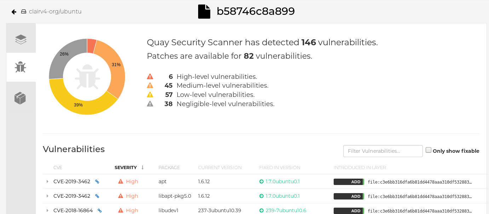

Vulnerability reporting with Clair on Red Hat Quay preface
Vulnerability reporting with Clair on Red Hat Quay
Abstract
- Preface
- I. Vulnerability reporting with Clair on Red Hat Quay overview
- II. Clair on Red Hat Quay
- III. Advanced Clair configuration
- 7. Unmanaged Clair configuration
- 8. Running a custom Clair configuration with a managed Clair database
- 9. Clair in disconnected environments
- 9.1. Setting up Clair in a disconnected OpenShift Container Platform cluster
- 9.1.1. Installing the clairctl command line utility tool for OpenShift Container Platform deployments
- 9.1.2. Retrieving and decoding the Clair configuration secret for Clair deployments on OpenShift Container Platform
- 9.1.3. Exporting the updaters bundle from a connected Clair instance
- 9.1.4. Configuring access to the Clair database in the disconnected OpenShift Container Platform cluster
- 9.1.5. Importing the updaters bundle into the disconnected OpenShift Container Platform cluster
- 9.2. Setting up a self-managed deployment of Clair for a disconnected OpenShift Container Platform cluster
- 9.2.1. Installing the clairctl command line utility tool for a self-managed Clair deployment on OpenShift Container Platform
- 9.2.2. Deploying a self-managed Clair container for disconnected OpenShift Container Platform clusters
- 9.2.3. Exporting the updaters bundle from a connected Clair instance
- 9.2.4. Configuring access to the Clair database in the disconnected OpenShift Container Platform cluster
- 9.2.5. Importing the updaters bundle into the disconnected OpenShift Container Platform cluster
- 9.3. Enabling Clair CRDA
- 9.4. Mapping repositories to Common Product Enumeration information
- 9.1. Setting up Clair in a disconnected OpenShift Container Platform cluster
Preface
The contents within this guide provide an overview of Clair for Red Hat Quay, running Clair on standalone Red Hat Quay and Operator deployments, and advanced Clair configuration.
Part I. Vulnerability reporting with Clair on Red Hat Quay overview
The content in this guide explains the key purposes and concepts of Clair on Red Hat Quay. It also contains information about Clair releases and the location of official Clair containers.
Table of Contents
Chapter 1. Clair for Red Hat Quay
Clair v4 (Clair) is an open source application that leverages static code analyses for parsing image content and reporting vulnerabilities affecting the content. Clair is packaged with Red Hat Quay and can be used in both standalone and Operator deployments. It can be run in highly scalable configurations, where components can be scaled separately as appropriate for enterprise environments.
With the release of Red Hat Quay 3.4, Clair v4 (image registry.redhat.io/quay/clair-rhel8 fully replaced Clair v2 (image quay.io/redhat/clair-jwt). See below for how to run Clair v2 in read-only mode while Clair v4 is updating.
1.1. Clair vulnerability databases
Clair uses the following vulnerability databases to report for issues in your images:
- Ubuntu Oval database
- Debian Oval database
- Red Hat Enterprise Linux (RHEL) Oval database
- SUSE Oval database
- Oracle Oval database
- Alpine SecDB database
- VMWare Photon OS database
- Amazon Web Services (AWS) UpdateInfo
- Pyup.io (Python) database
For information about how Clair does security mapping with the different databases, see ClairCore Severity Mapping.
Chapter 2. Clair concepts
The following sections provide a conceptual overview of how Clair works.
2.1. Clair in practice
A Clair analysis is broken down into three distinct parts: indexing, matching, and notification.
2.1.1. Indexing
Clair’s indexer service is responsible for indexing a manifest. In Clair, manifests are representations of a container image. The indexer service is the component that Clair uses to understand the contents of layers. Clair leverages the fact that Open Container Initiative (OCI) manifests and layers are content addressed to reduce duplicate work.
Indexing involves taking a manifest representing a container image and computing its constituent parts. The indexer tries to discover what packages exist in the image, what distribution the image is derived from, and what package repositories are used within the image. When this information is computed, it is persisted into an IndexReport.
The IndexReport is an intermediate data structure that describes the contents of a container image. The IndexReport can be fed to a matcher node for vulnerability analysis.
2.1.1.1. Content addressability
Clair treats all manifests and layers as content addressable. In the context of Clair, content addressable means that when a specific manifest is indexed, it is not indexed again unless it is required; this is the same for individual layers.
For example, consider how many images in a registry might use ubuntu:artful as a base layer. If the developers prefer basing their images off of Ubuntu, it could be a large majority of images. Treating the layers and manifests as content addressable means that Clair only fetches and analyzes the base layer one time.
In some cases, Clair should re-index a manifest. For example, when an internal component such as a package scanner is updated, Clair performs the analysis with the new package scanner. Clair has enough information to determine that a component has changed and that the IndexReport might be different the second time, and as a result it re-indexes the manifest.
A client can track Clair’s index_state endpoint to understand when an internal component has changed, and can subsequently issue re-indexes. See the Clair API guide to learn how to view Clair’s API specification.
2.1.2. Matching
With Clair, a matcher node is responsible for matching vulnerabilities to a provided IndexReport.
Matchers are responsible for keeping the database of vulnerabilities up to date. Matchers will typically run a set of updaters, which periodically probe their data sources for new content. New vulnerabilities are stored in the database when they are discovered.
The matcher API is designed to be used often. It is designed to always provide the most recent VulnerabilityReport when queried. The VulnerabilityReport summarizes both a manifest’s content and any vulnerabilities affecting the content.
2.1.2.1. Remote matching
A remote matcher acts similar to a matcher, however remote matchers use API calls to fetch vulnerability data for a provided IndexReport. Remote matchers are useful when it is impossible to persist data from a given source into the database.
The CRDA remote matcher is responsible for fetching vulnerabilities from Red Hat Code Ready Dependency Analytics (CRDA). By default, this matcher serves 100 requests per minute. The rate limiting can be lifted by requesting a dedicated API key, which is done by submitting the API key request form.
To enable CRDA remote matching, see "Enabling CRDA for Clair".
2.1.3. Notifications
Clair uses a notifier service that keeps track of new security database updates and informs users if new or removed vulnerabilities affect an indexed manifest.
When the notifier becomes aware of new vulnerabilities affecting a previously indexed manifest, it uses the configured methods in your config.yaml file to issue notifications about the new changes. Returned notifications express the most severe vulnerability discovered because of the change. This avoids creating excessive notifications for the same security database update.
When a user receives a notification, it issues a new request against the matcher to receive an up to date vulnerability report.
The notification schema is the JSON marshalled form of the following types:
// Reason indicates the catalyst for a notification
type Reason string
const (
Added Reason = "added"
Removed Reason = "removed"
Changed Reason = "changed"
)
type Notification struct {
ID uuid.UUID `json:"id"`
Manifest claircore.Digest `json:"manifest"`
Reason Reason `json:"reason"`
Vulnerability VulnSummary `json:"vulnerability"`
}
type VulnSummary struct {
Name string `json:"name"`
Description string `json:"description"`
Package *claircore.Package `json:"package,omitempty"`
Distribution *claircore.Distribution `json:"distribution,omitempty"`
Repo *claircore.Repository `json:"repo,omitempty"`
Severity string `json:"severity"`
FixedInVersion string `json:"fixed_in_version"`
Links string `json:"links"`
}You can subscribe to notifications through the following mechanics:
- Webhook delivery
- AMQP delivery
- STOMP delivery
Configuring the notifier is done through the Clair YAML configuration file.
2.1.3.1. Webhook delivery
When you configure the notifier for webhook delivery, you provide the service with the following pieces of information:
- A target URL where the webhook will fire.
-
The callback URL where the notifier might be reached, including its API path. For example,
http://clair-notifier/notifier/api/v1/notifications.
When the notifier has determined an updated security database has been changed the affected status of an indexed manifest, it delivers the following JSON body to the configured target:
{
"notifiction_id": {uuid_string},
"callback": {url_to_notifications}
}On receipt, the server can browse to the URL provided in the callback field.
2.1.3.2. AMQP delivery
The Clair notifier also supports delivering notifications to an AMQP broker. With AMQP delivery, you can control whether a callback is delivered to the broker or whether notifications are directly delivered to the queue. This allows the developer of the AMQP consumer to determine the logic of notification processing.
AMQP delivery only supports AMQP 0.x protocol (for example, RabbitMQ). If you need to publish notifications to AMQP 1.x message queue (for example, ActiveMQ), you can use STOMP delivery.
2.1.3.2.1. AMQP direct delivery
If the Clair notifier’s configuration specifies direct: true for AMQP delivery, notifications are delivered directly to the configured exchange.
When direct is set, the rollup property might be set to instruct the notifier to send a maximum number of notifications in a single AMQP. This provides balance between the size of the message and the number of messages delivered to the queue.
2.1.3.3. Notifier testing and development mode
The notifier has a testing and development mode that can be enabled with the NOTIFIER_TEST_MODE parameter. This parameter can be set to any value.
When the NOTIFIER_TEST_MODE parameter is set, the notifier begins sending fake notifications to the configured delivery mechanism every poll_interval interval. This provides an easy way to implement and test new or existing deliverers.
The notifier runs in NOTIFIER_TEST_MODE until the environment variable is cleared and the service is restarted.
2.1.3.4. Deleting notifications
To delete the notification, you can use the DELETE API call. Deleting a notification ID manually cleans up resources in the notifier. If you do not use the DELETE API call, the notifier waits a predetermined length of time before clearing delivered notifications from its database.
2.2. Clair authentication
In its current iteration, Clair v4 (Clair) handles authentication internally.
Previous versions of Clair used JWT Proxy to gate authentication.
Authentication is configured by specifying configuration objects underneath the auth key of the configuration. Multiple authentication configurations might be present, but they are used preferentially in the following order:
- PSK. With this authentication configuration, Clair implements JWT-based authentication using a pre-shared key.
Configuration. For example:
auth: psk: key: >- MDQ4ODBlNDAtNDc0ZC00MWUxLThhMzAtOTk0MzEwMGQwYTMxCg== iss: 'issuer'In this configuration the
authfield requires two parameters:iss, which is the issuer to validate all incoming requests, andkey, which is a base64 coded symmetric key for validating the requests.
2.3. Clair updaters
Clair uses Go packages called updaters that contain the logic of fetching and parsing different vulnerability databases.
Updaters are usually paired with a matcher to interpret if, and how, any vulnerability is related to a package. Administrators might want to update the vulnerability database less frequently, or not import vulnerabilities from databases that they know will not be used.
2.3.1. Configuring updaters
Updaters can be configured by the updaters key at the top of the configuration. If updaters are being run automatically within the matcher process, which is the default setting, the period for running updaters is configured under the matcher’s configuration field.
2.3.1.1. Updater sets
The following sets can be configured with Clair updaters:
-
alpine -
aws -
debian -
enricher/cvss -
libvuln/driver -
oracle -
photon -
pyupio -
rhel -
rhel/rhcc -
suse -
ubuntu -
updater
2.3.1.2. Selecting updater sets
Specific sets of updaters can be selected by the sets list. For example:
updaters:
sets:
- rhel
If the sets field is not populated, it defaults to using all sets.
2.3.1.3. Filtering updater sets
To reject an updater from running without disabling an entire set, the filter option can be used.
In the following example, the string is interpreted as a Go regexp package. This rejects any updater with a name that does not match.
This means that an empty string matches any string. It does not mean that it matches no strings.
updaters: filter: '^$'
2.3.1.4. Configuring specific updaters
Configuration for specific updaters can be passed by putting a key underneath the config parameter of the updaters object. The name of an updater might be constructed dynamically, and users should examine logs to ensure updater names are accurate. The specific object that an updater expects should be covered in the updater’s documentation.
In the following example, the rhel updater fetches a manifest from a different location:
updaters:
config:
rhel:
url: https://example.com/mirror/oval/PULP_MANIFEST2.3.1.5. Disabling the Clair Updater component
In some scenarios, users might want to disable the Clair updater component. Disabling updaters is required when running Red Hat Quay in a disconnected environment.
In the following example, Clair updaters are disabled:
matcher: disable_updaters: true
2.3.2. Clair updater URLs
The following are the HTTP hosts and paths that Clair will attempt to talk to in a default configuration. This list is non-exhaustive. Some servers issue redirects and some request URLs are constructed dynamically.
- https://secdb.alpinelinux.org/
- http://repo.us-west-2.amazonaws.com/2018.03/updates/x86_64/mirror.list
- https://cdn.amazonlinux.com/2/core/latest/x86_64/mirror.list
- https://www.debian.org/security/oval/
- https://linux.oracle.com/security/oval/
- https://packages.vmware.com/photon/photon_oval_definitions/
- https://github.com/pyupio/safety-db/archive/
- https://catalog.redhat.com/api/containers/
- https://www.redhat.com/security/data/
- https://support.novell.com/security/oval/
- https://people.canonical.com/~ubuntu-security/oval/
Chapter 3. About Clair
The content in this section highlights Clair releases, official Clair containers, and information about CVSS enrichment data.
3.1. Clair releases
New versions of Clair are regularly released. The source code needed to build Clair is packaged as an archive and attached to each release. Clair releases can be found at Clair releases.
Release artifacts also include the clairctl command line interface tool, which obtains updater data from the internet by using an open host.
3.2. Official Clair containers
Clair is officially packaged and released as a container at Quay.io/projectquay/clair. The latest tag tracks the Git development branch. Version tags are built from the corresponding release.
3.3. CVE ratings from the National Vulnerability Database
As of Clair v4.2, Common Vulnerability Scoring System (CVSS) enrichment data is now viewable in the Red Hat Quay UI. Additionally, Clair v4.2 adds CVSS scores from the National Vulnerability Database for detected vulnerabilities.
With this change, if the vulnerability has a CVSS score that is within 2 levels of the distribution score, the Red Hat Quay UI present’s the distribution’s score by default. For example:

This differs from the previous interface, which would only display the following information:

3.4. Federal Information Processing Standard (FIPS) readiness and compliance
The Federal Information Processing Standard (FIPS) developed by the National Institute of Standards and Technology (NIST) is regarded as the highly regarded for securing and encrypting sensitive data, notably in highly regulated areas such as banking, healthcare, and the public sector. Red Hat Enterprise Linux (RHEL) and OpenShift Container Platform support the FIPS standard by providing a FIPS mode, in which the system only allows usage of specific FIPS-validated cryptographic modules like openssl. This ensures FIPS compliance.
Red Hat Quay supports running on FIPS-enabled RHEL and OpenShift Container Platform environments from Red Hat Quay version 3.5.0.
Part II. Clair on Red Hat Quay
This guide contains procedures for running Clair on Red Hat Quay in both standalone and OpenShift Container Platform Operator deployments.
Chapter 4. Setting up Clair on standalone Red Hat Quay deployments
For standalone Red Hat Quay deployments, you can set up Clair manually.
Procedure
- Create a directory
Deploy a Clair Postgres database by entering the following command:
$ sudo podman run -d --rm --name postgresql-clairv4 \ -e POSTGRESQL_USER=clairuser \ -e POSTGRESQL_PASSWORD=clairpass \ -e POSTGRESQL_DATABASE=clair \ -e POSTGRESQL_ADMIN_PASSWORD=adminpass \ -p 5433:5433 \ -v /home/<user-name>/quay-poc/postgres-clairv4:/var/lib/pgsql/data:Z \ registry.redhat.io/rhel8/postgresql-10:1
Install the Postgres
uuid-osspmodule for your Clair deployment:$ podman exec -it postgresql-clairv4 /bin/bash -c 'echo "CREATE EXTENSION IF NOT EXISTS \"uuid-ossp\"" | psql -d clair -U postgres'
Example output
CREATE EXTENSION
NoteClair requires the
uuid-osspextension to be added to its Postgres database. For users with proper privileges, creating the extension will automatically be added by Clair. If users do not have the proper privileges, the extension must be added before start Clair.If the extension is not present, the following error will be displayed when Clair attempts to start:
ERROR: Please load the "uuid-ossp" extension. (SQLSTATE 42501).Create a folder for your Clair configuration file, for example:
$ mkdir /etc/clairv4/config/
Change into the Clair configuration folder:
$ cd /etc/clairv4/config/
Create a Clair configuration file, for example:
http_listen_addr: :8081 introspection_addr: :8088 log_level: debug indexer: connstring: host=quay-server.example.com port=5433 dbname=clair user=clairuser password=clairpass sslmode=disable scanlock_retry: 10 layer_scan_concurrency: 5 migrations: true matcher: connstring: host=quay-server.example.com port=5433 dbname=clair user=clairuser password=clairpass sslmode=disable max_conn_pool: 100 run: "" migrations: true indexer_addr: clair-indexer notifier: connstring: host=quay-server.example.com port=5433 dbname=clair user=clairuser password=clairpass sslmode=disable delivery_interval: 1m poll_interval: 5m migrations: true auth: psk: key: "MTU5YzA4Y2ZkNzJoMQ==" iss: ["quay"] # tracing and metrics trace: name: "jaeger" probability: 1 jaeger: agent_endpoint: "localhost:6831" service_name: "clair" metrics: name: "prometheus"For more information about Clair’s configuration format, see Clair configuration reference.
Start Clair by using the container image, mounting in the configuration from the file you created:
$ sudo podman run -it --rm --name clairv4 \ -p 8081:8081 -p 8088:8088 \ -e CLAIR_CONF=/clair/config.yaml \ -e CLAIR_MODE=combo \ -v /etc/clairv4/config:/clair:Z \ registry.redhat.io/quay/clair-rhel8:v3.8.0
NoteRunning multiple Clair containers is also possible, but for deployment scenarios beyond a single container the use of a container orchestrator like Kubernetes or OpenShift Container Platform is strongly recommended.
Chapter 5. Clair on OpenShift Container Platform
To set up Clair v4 (Clair) on a Red Hat Quay deployment on OpenShift Container Platform, it is recommended to use the Red Hat Quay Operator. By default, the Red Hat Quay Operator will install or upgrade a Clair deployment along with your Red Hat Quay deployment and configure Clair automatically.
5.1. Setting up Clair on Red Hat Quay Operator deployment
Use the following procedure to configure Clair on a Red Hat Quay OpenShift Container Platform deployment.
Prerequisites
- Your Red Hat Quay Operator has been upgraded to 3.4.0 or greater.
Procedure
Enter the following command to set your current project to the name of the project that is running Red Hat Quay:
$ oc project quay-enterprise
Create a Postgres deployment file for Clair, for example,
clairv4-postgres.yaml:--- apiVersion: apps/v1 kind: Deployment metadata: name: clairv4-postgres namespace: quay-enterprise labels: quay-component: clairv4-postgres spec: replicas: 1 selector: matchLabels: quay-component: clairv4-postgres template: metadata: labels: quay-component: clairv4-postgres spec: volumes: - name: postgres-data persistentVolumeClaim: claimName: clairv4-postgres containers: - name: postgres image: postgres:11.5 imagePullPolicy: "IfNotPresent" ports: - containerPort: 5432 env: - name: POSTGRES_USER value: "postgres" - name: POSTGRES_DB value: "clair" - name: POSTGRES_PASSWORD value: "postgres" - name: PGDATA value: "/etc/postgres/data" volumeMounts: - name: postgres-data mountPath: "/etc/postgres" --- apiVersion: v1 kind: PersistentVolumeClaim metadata: name: clairv4-postgres labels: quay-component: clairv4-postgres spec: accessModes: - "ReadWriteOnce" resources: requests: storage: "5Gi" volumeName: "clairv4-postgres" --- apiVersion: v1 kind: Service metadata: name: clairv4-postgres labels: quay-component: clairv4-postgres spec: type: ClusterIP ports: - port: 5432 protocol: TCP name: postgres targetPort: 5432 selector: quay-component: clairv4-postgresEnter the following command to the deploy the Postgres database:
$ oc create -f ./clairv4-postgres.yaml
Create a
config.yamlfile for Clair, for example:introspection_addr: :8089 http_listen_addr: :8080 log_level: debug indexer: connstring: host=clairv4-postgres port=5432 dbname=clair user=postgres password=postgres sslmode=disable scanlock_retry: 10 layer_scan_concurrency: 5 migrations: true matcher: connstring: host=clairv4-postgres port=5432 dbname=clair user=postgres password=postgres sslmode=disable max_conn_pool: 100 run: "" migrations: true indexer_addr: clair-indexer notifier: connstring: host=clairv4-postgres port=5432 dbname=clair user=postgres password=postgres sslmode=disable delivery: 1m poll_interval: 5m migrations: true auth: psk: key: MTU5YzA4Y2ZkNzJoMQ== 1 iss: ["quay"] # tracing and metrics trace: name: "jaeger" probability: 1 jaeger: agent_endpoint: "localhost:6831" service_name: "clair" metrics: name: "prometheus"- 1
- To generate a Clair pre-shared key (PSK), enable
scanningin the Security Scanner section of the User Interface and clickGenerate PSK.
More information about Clair’s configuration format can be found in upstream Clair documentation.
Enter the following command to create a secret from the Clair
config.yamlfile:$ oc create secret generic clairv4-config-secret --from-file=./config.yaml
Create a deployment file for Clair, for example,
clair-combo.yaml:--- apiVersion: extensions/v1beta1 kind: Deployment metadata: labels: quay-component: clair-combo name: clair-combo spec: replicas: 1 selector: matchLabels: quay-component: clair-combo template: metadata: labels: quay-component: clair-combo spec: containers: - image: registry.redhat.io/quay/clair-rhel8:v3.8.0 1 imagePullPolicy: IfNotPresent name: clair-combo env: - name: CLAIR_CONF value: /clair/config.yaml - name: CLAIR_MODE value: combo ports: - containerPort: 8080 name: clair-http protocol: TCP - containerPort: 8089 name: clair-intro protocol: TCP volumeMounts: - mountPath: /clair/ name: config imagePullSecrets: - name: redhat-pull-secret restartPolicy: Always volumes: - name: config secret: secretName: clairv4-config-secret --- apiVersion: v1 kind: Service metadata: name: clairv4 2 labels: quay-component: clair-combo spec: ports: - name: clair-http port: 80 protocol: TCP targetPort: 8080 - name: clair-introspection port: 8089 protocol: TCP targetPort: 8089 selector: quay-component: clair-combo type: ClusterIPEnter the following command to create the Clair deployment:
$ oc create -f ./clair-combo.yaml
Add the following entries to your
config.yamlfile for your Red Hat Quay deployment.FEATURE_SECURITY_NOTIFICATIONS: true FEATURE_SECURITY_SCANNER: true SECURITY_SCANNER_V4_ENDPOINT: http://clairv4 1- 1
- Obtained by the credentials included in your Clair deployment file.
Enter the following command to delete the original configuration secret for your
quay-enterpriseproject:$ oc delete secret quay-enterprise-config-secret
Deploy the modified
config.yamlto the secret containing that file:$ oc create secret generic quay-enterprise-config-secret --from-file=./config.yaml
Restart your Red Hat Quay pods.
NoteDeleting the
quay-apppods causes pods with the updated configuration to be deployed.
Chapter 6. Testing Clair
Use the following procedure to test Clair on either a standalone Red Hat Quay deployment, or on an OpenShift Container Platform Operator-based deployment.
Prerequisites
- You have deployed the Clair container image.
Procedure
Pull a sample image by entering the following command:
$ podman pull ubuntu:20.04
Tag the image to your registry by entering the following command:
$ sudo podman tag docker.io/library/ubuntu:20.04 <quay-server.example.com>/<user-name>/ubuntu:20.04
Push the image to your Red Hat Quay registry by entering the following command:
$ sudo podman push --tls-verify=false quay-server.example.com/quayadmin/ubuntu:20.04
- Log in to your Red Hat Quay deployment through the UI.
- Click the repository name, for example, quayadmin/ubuntu.
In the navigation pane, click Tags.
Report summary

Click the image report, for example, 45 medium, to show a more detailed report:
Report details

Part III. Advanced Clair configuration
Use this section to configure advanced Clair features.
Table of Contents
- 7. Unmanaged Clair configuration
- 8. Running a custom Clair configuration with a managed Clair database
- 9. Clair in disconnected environments
- 9.1. Setting up Clair in a disconnected OpenShift Container Platform cluster
- 9.1.1. Installing the clairctl command line utility tool for OpenShift Container Platform deployments
- 9.1.2. Retrieving and decoding the Clair configuration secret for Clair deployments on OpenShift Container Platform
- 9.1.3. Exporting the updaters bundle from a connected Clair instance
- 9.1.4. Configuring access to the Clair database in the disconnected OpenShift Container Platform cluster
- 9.1.5. Importing the updaters bundle into the disconnected OpenShift Container Platform cluster
- 9.2. Setting up a self-managed deployment of Clair for a disconnected OpenShift Container Platform cluster
- 9.2.1. Installing the clairctl command line utility tool for a self-managed Clair deployment on OpenShift Container Platform
- 9.2.2. Deploying a self-managed Clair container for disconnected OpenShift Container Platform clusters
- 9.2.3. Exporting the updaters bundle from a connected Clair instance
- 9.2.4. Configuring access to the Clair database in the disconnected OpenShift Container Platform cluster
- 9.2.5. Importing the updaters bundle into the disconnected OpenShift Container Platform cluster
- 9.3. Enabling Clair CRDA
- 9.4. Mapping repositories to Common Product Enumeration information
- 9.1. Setting up Clair in a disconnected OpenShift Container Platform cluster
Chapter 7. Unmanaged Clair configuration
Red Hat Quay users can run an unmanaged Clair configuration with the Red Hat Quay OpenShift Container Platform Operator. This feature allows users to create an unmanaged Clair database, or run their custom Clair configuration without an unmanaged database.
An unmanaged Clair database allows the Red Hat Quay Operator to work in a geo-replicated environment, where multiple instances of the Operator must communicate with the same database. An unmanaged Clair database can also be used when a user requires a highly-available (HA) Clair database that exists outside of a cluster.
7.1. Running a custom Clair configuration with an unmanaged Clair database
Use the following procedure to set your Clair database to unmanaged.
Procedure
In the Quay Operator, set the
clairpostgrescomponent of theQuayRegistrycustom resource tomanaged: false:apiVersion: quay.redhat.com/v1 kind: QuayRegistry metadata: name: quay370 spec: configBundleSecret: config-bundle-secret components: - kind: objectstorage managed: false - kind: route managed: true - kind: tls managed: false - kind: clairpostgres managed: false
7.2. Configuring a custom Clair database
The Red Hat Quay Operator for OpenShift Container Platform allows users to provide their own Clair database.
Use the following procedure to create a custom Clair database.
Procedure
Create a Quay configuration bundle secret that includes the
clair-config.yamlby entering the following command:$ oc create secret generic --from-file config.yaml=./config.yaml --from-file extra_ca_cert_rds-ca-2019-root.pem=./rds-ca-2019-root.pem --from-file clair-config.yaml=./clair-config.yaml --from-file ssl.cert=./ssl.cert --from-file ssl.key=./ssl.key config-bundle-secret
Example Clair
config.yamlfileindexer: connstring: host=quay-server.example.com port=5432 dbname=quay user=quayrdsdb password=quayrdsdb sslrootcert=/run/certs/rds-ca-2019-root.pem sslmode=verify-ca layer_scan_concurrency: 6 migrations: true scanlock_retry: 11 log_level: debug matcher: connstring: host=quay-server.example.com port=5432 dbname=quay user=quayrdsdb password=quayrdsdb sslrootcert=/run/certs/rds-ca-2019-root.pem sslmode=verify-ca migrations: true metrics: name: prometheus notifier: connstring: host=quay-server.example.com port=5432 dbname=quay user=quayrdsdb password=quayrdsdb sslrootcert=/run/certs/rds-ca-2019-root.pem sslmode=verify-ca migrations: trueNote-
The database certificate is mounted under
/run/certs/rds-ca-2019-root.pemon the Clair application pod in theclair-config.yaml. It must be specified when configuring yourclair-config.yaml. -
An example
clair-config.yamlcan be found at Clair on OpenShift config.
-
The database certificate is mounted under
Add the
clair-config.yamlfile to your bundle secret, for example:apiVersion: v1 kind: Secret metadata: name: config-bundle-secret namespace: quay-enterprise data: config.yaml: <base64 encoded Quay config> clair-config.yaml: <base64 encoded Clair config> extra_ca_cert_<name>: <base64 encoded ca cert> clair-ssl.crt: >- clair-ssl.key: >-
NoteWhen updated, the provided
clair-config.yamlfile is mounted into the Clair pod. Any fields not provided are automatically populated with defaults using the Clair configuration module.You can check the status of your Clair pod by clicking the commit in the Build History page, or by running
oc get pods -n <namespace>. For example:$ oc get pods -n <namespace>
Example output
NAME READY STATUS RESTARTS AGE f192fe4a-c802-4275-bcce-d2031e635126-9l2b5-25lg2 1/1 Running 0 7s
Chapter 8. Running a custom Clair configuration with a managed Clair database
In some cases, users might want to run a custom Clair configuration with a managed Clair database. This is useful in the following scenarios:
- When a user wants to disable specific updater resources.
When a user is running Red Hat Quay in an disconnected environment. For more information about running Clair in a disconnected environment, see Configuring access to the Clair database in the air-gapped OpenShift cluster.
Note-
If you are running Red Hat Quay in an disconnected environment, the
airgapparameter of yourclair-config.yamlmust be set totrue. - If you are running Red Hat Quay in an disconnected environment, you should disable all updater components.
-
If you are running Red Hat Quay in an disconnected environment, the
8.1. Setting a Clair database to managed
Use the following procedure to set your Clair database to managed.
Procedure
In the Quay Operator, set the
clairpostgrescomponent of theQuayRegistrycustom resource tomanaged: true:apiVersion: quay.redhat.com/v1 kind: QuayRegistry metadata: name: quay370 spec: configBundleSecret: config-bundle-secret components: - kind: objectstorage managed: false - kind: route managed: true - kind: tls managed: false - kind: clairpostgres managed: true
8.2. Configuring a custom Clair database
The Red Hat Quay Operator for OpenShift Container Platform allows users to provide their own Clair database.
Use the following procedure to create a custom Clair database.
Procedure
Create a Quay configuration bundle secret that includes the
clair-config.yamlby entering the following command:$ oc create secret generic --from-file config.yaml=./config.yaml --from-file extra_ca_cert_rds-ca-2019-root.pem=./rds-ca-2019-root.pem --from-file clair-config.yaml=./clair-config.yaml --from-file ssl.cert=./ssl.cert --from-file ssl.key=./ssl.key config-bundle-secret
Example Clair
config.yamlfileindexer: connstring: host=quay-server.example.com port=5432 dbname=quay user=quayrdsdb password=quayrdsdb sslrootcert=/run/certs/rds-ca-2019-root.pem sslmode=verify-ca layer_scan_concurrency: 6 migrations: true scanlock_retry: 11 log_level: debug matcher: connstring: host=quay-server.example.com port=5432 dbname=quay user=quayrdsdb password=quayrdsdb sslrootcert=/run/certs/rds-ca-2019-root.pem sslmode=verify-ca migrations: true metrics: name: prometheus notifier: connstring: host=quay-server.example.com port=5432 dbname=quay user=quayrdsdb password=quayrdsdb sslrootcert=/run/certs/rds-ca-2019-root.pem sslmode=verify-ca migrations: trueNote-
The database certificate is mounted under
/run/certs/rds-ca-2019-root.pemon the Clair application pod in theclair-config.yaml. It must be specified when configuring yourclair-config.yaml. -
An example
clair-config.yamlcan be found at Clair on OpenShift config.
-
The database certificate is mounted under
Add the
clair-config.yamlfile to your bundle secret, for example:apiVersion: v1 kind: Secret metadata: name: config-bundle-secret namespace: quay-enterprise data: config.yaml: <base64 encoded Quay config> clair-config.yaml: <base64 encoded Clair config> extra_ca_cert_<name>: <base64 encoded ca cert> clair-ssl.crt: >- clair-ssl.key: >-
NoteWhen updated, the provided
clair-config.yamlfile is mounted into the Clair pod. Any fields not provided are automatically populated with defaults using the Clair configuration module.You can check the status of your Clair pod by clicking the commit in the Build History page, or by running
oc get pods -n <namespace>. For example:$ oc get pods -n <namespace>
Example output
NAME READY STATUS RESTARTS AGE f192fe4a-c802-4275-bcce-d2031e635126-9l2b5-25lg2 1/1 Running 0 7s
Chapter 9. Clair in disconnected environments
Clair uses a set of components called updaters to handle the fetching and parsing of data from various vulnerability databases. Updaters are set up by default to pull vulnerability data directly from the internet and work for immediate use. However, some users might require Red Hat Quay to run in a disconnected environment, or an environment without direct access to the internet. Clair supports disconnected environments by working with different types of update workflows that take network isolation into consideration. This works by using the clairctl command line interface tool, which obtains updater data from the internet by using an open host, securely transferring the data to an isolated host, and then important the updater data on the isolated host into Clair.
Use this guide to deploy Clair in a disconnected environment.
Currently, Clair enrichment data is CVSS data. Enrichment data is currently unsupported in disconnected environments.
For more information about Clair updaters, see "Clair updaters".
9.1. Setting up Clair in a disconnected OpenShift Container Platform cluster
Use the following procedures to set up an OpenShift Container Platform provisioned Clair pod in a disconnected OpenShift Container Platform cluster.
9.1.1. Installing the clairctl command line utility tool for OpenShift Container Platform deployments
Use the following procedure to install the clairctl CLI tool for OpenShift Container Platform deployments.
Procedure
Install the
clairctlprogram for a Clair deployment in an OpenShift Container Platform cluster by using theoc cpcommand, for example:$ oc -n quay-enterprise cp example-registry-clair-app-64dd48f866-6ptgw:/usr/bin/clairctl ./clairctl
Set the permissions of the
clairctlfile so that it can be executed and run by the user, for example:$ chmod u+x ./clairctl
9.1.2. Retrieving and decoding the Clair configuration secret for Clair deployments on OpenShift Container Platform
Use the following procedure to retrieve and decode the configuration secret for an OpenShift Container Platform provisioned Clair instance on OpenShift Container Platform.
Prerequisites
-
You have installed the
clairctlcommand line utility tool.
Procedure
Enter the following command to retrieve and decode the configuration secret, and then save it to a Clair configuration YAML:
$ kubectl get secret -n quay-enterprise example-registry-clair-config-secret -o "jsonpath={$.data['config\.yaml']}" | base64 -d > clair-config.yamlUpdate the
clair-config.yamlfile so that thedisable_updatersandairgapparameters are set totrue, for example:--- indexer: airgap: true --- matcher: disable_updaters: true ---
9.1.3. Exporting the updaters bundle from a connected Clair instance
Use the following procedure to export the updaters bundle from a Clair instance that has access to the internet.
Prerequisites
-
You have installed the
clairctlcommand line utility tool. -
You have retrieved and decoded the Clair configuration secret, and saved it to a Clair
config.yamlfile. -
The
disable_updatersandairgapparameters are set totruein your Clairconfig.yamlfile.
Procedure
From a Clair instance that has access to the internet, use the
clairctlCLI tool with your configuration file to export the updaters bundle. For example:$ ./clairctl --config ./config.yaml export-updaters updates.gz
9.1.4. Configuring access to the Clair database in the disconnected OpenShift Container Platform cluster
Use the following procedure to configure access to the Clair database in your disconnected OpenShift Container Platform cluster.
Prerequisites
-
You have installed the
clairctlcommand line utility tool. -
You have retrieved and decoded the Clair configuration secret, and saved it to a Clair
config.yamlfile. -
The
disable_updatersandairgapparameters are set totruein your Clairconfig.yamlfile. - You have exported the updaters bundle from a Clair instance that has access to the internet.
Procedure
Determine your Clair database service by using the
kubectlCLI tool, for example:$ kubectl get svc -n quay-enterprise
Example output
NAME TYPE CLUSTER-IP EXTERNAL-IP PORT(S) AGE example-registry-clair-app ClusterIP 172.30.224.93 <none> 80/TCP,8089/TCP 4d21h example-registry-clair-postgres ClusterIP 172.30.246.88 <none> 5432/TCP 4d21h ...
Forward the Clair database port so that it is accessible from the local machine. For example:
$ kubectl port-forward -n quay-enterprise service/example-registry-clair-postgres 5432:5432
Update your Clair
config.yamlfile, for example:indexer: connstring: host=localhost port=5432 dbname=postgres user=postgres password=postgres sslmode=disable 1 scanlock_retry: 10 layer_scan_concurrency: 5 migrations: true scanner: repo: rhel-repository-scanner: repo2cpe_mapping_file: /data/cpe-map.json package: rhel_containerscanner: name2repos_mapping_file: /data/repo-map.json- 1
- Replace the value of the
hostin the multipleconnstringfields withlocalhost.
Note-
As an alternative to using
kubectl port-forward, you can usekubefwdinstead. With this method, there is no need to modify theconnstringfield in the Clair configuration file to uselocalhost. -
For more information about the
rhel-repository-scannerandrhel_containerscannerparameters, see "Mapping repositories to Common Product Enumeration information".
9.1.5. Importing the updaters bundle into the disconnected OpenShift Container Platform cluster
Use the following procedure to import the updaters bundle into your disconnected OpenShift Container Platform cluster.
Prerequisites
-
You have installed the
clairctlcommand line utility tool. -
You have retrieved and decoded the Clair configuration secret, and saved it to a Clair
config.yamlfile. -
The
disable_updatersandairgapparameters are set totruein your Clairconfig.yamlfile. - You have exported the updaters bundle from a Clair instance that has access to the internet.
- You have transferred the updaters bundle into your disconnected environment.
Procedure
Use the
clairctlCLI tool to import the updaters bundle into the Clair database that is deployed by OpenShift Container Platform. For example:$ ./clairctl --config ./clair-config.yaml import-updaters updates.gz
9.2. Setting up a self-managed deployment of Clair for a disconnected OpenShift Container Platform cluster
Use the following procedures to set up a self-managed deployment of Clair for a disconnected OpenShift Container Platform cluster.
9.2.1. Installing the clairctl command line utility tool for a self-managed Clair deployment on OpenShift Container Platform
Use the following procedure to install the clairctl CLI tool for self-managed Clair deployments on OpenShift Container Platform.
Procedure
Install the
clairctlprogram for a self-managed Clair deployment by using thepodman cpcommand, for example:$ sudo podman cp clairv4:/usr/bin/clairctl ./clairctl
Set the permissions of the
clairctlfile so that it can be executed and run by the user, for example:$ chmod u+x ./clairctl
9.2.2. Deploying a self-managed Clair container for disconnected OpenShift Container Platform clusters
Use the following procedure to deploy a self-managed Clair container for disconnected OpenShift Container Platform clusters.
Prerequisites
-
You have installed the
clairctlcommand line utility tool.
Procedure
Create a folder for your Clair configuration file, for example:
$ mkdir /etc/clairv4/config/
Create a Clair configuration file with the
disable_updatersparameter set totrue, for example:--- indexer: airgap: true --- matcher: disable_updaters: true ---
Start Clair by using the container image, mounting in the configuration from the file you created:
$ sudo podman run -it --rm --name clairv4 \ -p 8081:8081 -p 8088:8088 \ -e CLAIR_CONF=/clair/config.yaml \ -e CLAIR_MODE=combo \ -v /etc/clairv4/config:/clair:Z \ registry.redhat.io/quay/clair-rhel8:v3.8.0
9.2.3. Exporting the updaters bundle from a connected Clair instance
Use the following procedure to export the updaters bundle from a Clair instance that has access to the internet.
Prerequisites
-
You have installed the
clairctlcommand line utility tool. - You have deployed Clair.
-
The
disable_updatersandairgapparameters are set totruein your Clairconfig.yamlfile.
Procedure
From a Clair instance that has access to the internet, use the
clairctlCLI tool with your configuration file to export the updaters bundle. For example:$ ./clairctl --config ./config.yaml export-updaters updates.gz
9.2.4. Configuring access to the Clair database in the disconnected OpenShift Container Platform cluster
Use the following procedure to configure access to the Clair database in your disconnected OpenShift Container Platform cluster.
Prerequisites
-
You have installed the
clairctlcommand line utility tool. - You have deployed Clair.
-
The
disable_updatersandairgapparameters are set totruein your Clairconfig.yamlfile. - You have exported the updaters bundle from a Clair instance that has access to the internet.
Procedure
Determine your Clair database service by using the
kubectlCLI tool, for example:$ kubectl get svc -n quay-enterprise
Example output
NAME TYPE CLUSTER-IP EXTERNAL-IP PORT(S) AGE example-registry-clair-app ClusterIP 172.30.224.93 <none> 80/TCP,8089/TCP 4d21h example-registry-clair-postgres ClusterIP 172.30.246.88 <none> 5432/TCP 4d21h ...
Forward the Clair database port so that it is accessible from the local machine. For example:
$ kubectl port-forward -n quay-enterprise service/example-registry-clair-postgres 5432:5432
Update your Clair
config.yamlfile, for example:indexer: connstring: host=localhost port=5432 dbname=postgres user=postgres password=postgres sslmode=disable 1 scanlock_retry: 10 layer_scan_concurrency: 5 migrations: true scanner: repo: rhel-repository-scanner: repo2cpe_mapping_file: /data/cpe-map.json package: rhel_containerscanner: name2repos_mapping_file: /data/repo-map.json- 1
- Replace the value of the
hostin the multipleconnstringfields withlocalhost.
Note-
As an alternative to using
kubectl port-forward, you can usekubefwdinstead. With this method, there is no need to modify theconnstringfield in the Clair configuration file to uselocalhost. -
For more information about the
rhel-repository-scannerandrhel_containerscannerparameters, see "Mapping repositories to Common Product Enumeration information".
9.2.5. Importing the updaters bundle into the disconnected OpenShift Container Platform cluster
Use the following procedure to import the updaters bundle into your disconnected OpenShift Container Platform cluster.
Prerequisites
-
You have installed the
clairctlcommand line utility tool. - You have deployed Clair.
-
The
disable_updatersandairgapparameters are set totruein your Clairconfig.yamlfile. - You have exported the updaters bundle from a Clair instance that has access to the internet.
- You have transferred the updaters bundle into your disconnected environment.
Procedure
Use the
clairctlCLI tool to import the updaters bundle into the Clair database that is deployed by OpenShift Container Platform:$ ./clairctl --config ./clair-config.yaml import-updaters updates.gz
9.3. Enabling Clair CRDA
Java scanning depends on a public, Red Hat provided API service called Code Ready Dependency Analytics (CRDA). CRDA is only available with internet access and is not enabled by default.
Use the following procedure to integrate the CRDA service with a custom API key and enable CRDA for Java and Python scanning.
Prerequisites
- Red Hat Quay 3.7 or greater
Procedure
- Submit the API key request form to obtain the Quay-specific CRDA remote matcher.
Set the CRDA configuration in your
clair-config.yamlfile:matchers: config: crda: url: https://gw.api.openshift.io/api/v2/ key: <CRDA_API_KEY> 1 source: <QUAY_SERVER_HOSTNAME> 2- 1
- Insert the Quay-specific CRDA remote matcher from the API key request form here.
- 2
- The hostname of your Quay server.
9.4. Mapping repositories to Common Product Enumeration information
Clair’s Red Hat Enterprise Linux (RHEL) scanner relies on a Common Product Enumeration (CPE) file to map RPM packages to the corresponding security data to produce matching results. The CPE file must be present, or access to the file must be allowed, for the scanner to properly process RPM packages. If the file is not present, RPM packages installed in the container image will not be scanned.
Table 9.1. Clair CPE mapping files
| CPE | Link to JSON mapping file |
|---|---|
|
| |
|
|
In addition to uploading CVE information to the database for disconnected Clair installations, you must also make the mapping file available locally:
- For standalone Red Hat Quay and Clair deployments, the mapping file must be loaded into the Clair pod.
-
For Red Hat Quay Operator deployments on OpenShift Container Platform and Clair deployments, you must set the Clair component to
unamanged. Then, Clair must be deployed manually, setting the configuration to load a local copy of the mapping file.
9.4.1. Mapping repositories to Common Product Enumeration example configuration
Use the repo2cpe_mapping_file and name2repos_mapping_file fields in your Clair configuration to include the CPE JSON mapping files. For example:
indexer:
scanner:
repo:
rhel-repository-scanner:
repo2cpe_mapping_file: /data/cpe-map.json
package:
rhel_containerscanner:
name2repos_mapping_file: /data/repo-map.jsonFor more information, see How to accurately match OVAL security data to installed RPMs.